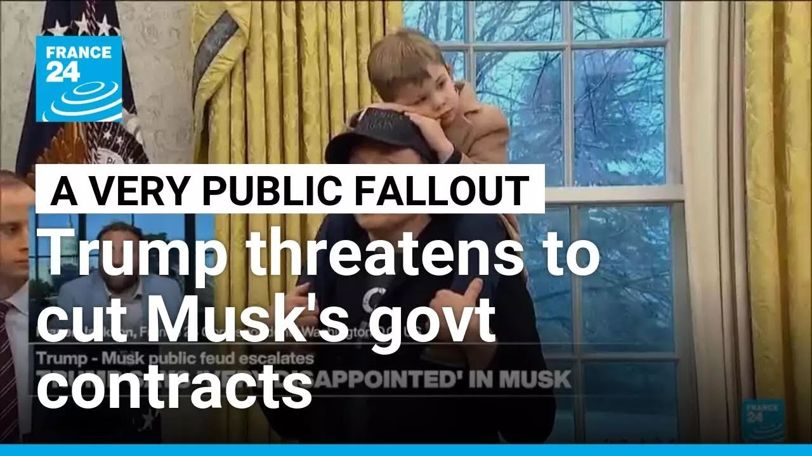

【特朗普威胁取消马斯克的政府合同，双方公开争执升级】
Summary: Once close allies, Trump and Musk have now fallen out publicly. Trump criticized Musk in the Oval Office for opposing his tax and spending bill, while Musk fired back, accusing Trump of being ungrateful. The escalating conflict has led to a sharp drop in Tesla's stock price.
摘要： 曾经亲密的盟友如今关系恶化，特朗普与马斯克公开决裂。特朗普在椭圆形办公室批评马斯克反对其税收与支出法案，马斯克则回击称特朗普忘恩负义，双方矛盾激化导致特斯拉股价暴跌。

⏱️ Estimated Reading Time: 7 min
📚 高考3500生词 📚 雅思生词 📚 托福生词 📚 GRE生词 📚 UP主推荐生词
Now, once they were bosom buddies, but the milks turned sour between Donald Trump and Elon Musk.
他们曾是亲密盟友，但如今唐纳德·特朗普与埃隆·马斯克关系恶化。
As Trump sat in the Oval Office this Thursday alongside Germany's leader, he lamented the soured relationship with Elon Musk.
本周四，特朗普在椭圆形办公室与德国领导人会晤时，哀叹与埃隆·马斯克关系的破裂。
His adviser turned social media antagonist.
这位曾经的顾问已成为社交媒体上的对手。
Trump said he was very disappointed with Musk after the billionaire former backer lambasted the president's signature bill of tax cuts and spending plans.
特朗普表示对马斯克非常失望，因这位亿万富翁昔日支持者猛烈抨击了总统的标志性减税与支出计划。
Riser Jackson's in Washington.
瑞瑟·杰克逊在华盛顿报道。
He joins us now.
他现在与我们连线。
Fraser, a very good evening to you.
弗雷泽，晚上好。
Who would have thought that these two men would fall out?
谁能想到这两人会闹翻？
I'm not going to lie, Mark.
马克，说实话。
This is providing everything that I want from my Real Housewives obsession is now spilled into the political world.
这简直满足了我对《真实主妇》式戏剧的所有期待，如今蔓延到了政界。
The blow up between Elon Musk and Donald Trump has been catastrophic.
埃隆·马斯克与唐纳德·特朗普的冲突极具破坏性。
And it's all happened over the course of the last 3 hours.
而这一切仅在过去3小时内爆发。
They have been very close.
他们曾关系密切。
You know, a week ago, we were talking about how they were playing happy families inside of the Oval Office.
一周前，我们还在讨论他们在椭圆形办公室其乐融融的场景。
Donald Trump gave him that key to the White House.
特朗普曾授予他白宫通行权。
Uh well, no more.
但现在，一切不复存在。
Uh things have taken a dramatic turn now.
局势已急剧转变。
Uh there has been a dramatic fallout.
双方关系严重恶化。
Donald Trump talking uh in front of the German chancellor inside of the Oval Office was asked about Elon Musk who has been critical about his spending bill, the big beautiful bill as he calls it.
特朗普在椭圆形办公室与德国总理会晤时，被问及马斯克对其所谓"宏伟支出法案"的批评。
He says Elon Musk says that it's going to bankrupt the nation and that it's going to add to the national deficit by about $2.5 trillion.
他提到马斯克称该法案将导致国家破产，并增加约2.5万亿美元赤字。
It should be noted that the nonpartisan official budget office also agrees with that sentiment.
需注意的是，无党派官方预算机构也持相同观点。
Uh but Donald Trump lashed out saying that he was disappointed by Elon Musk.
但特朗普怒斥称对马斯克感到失望。
Again, it should be noted that in private it's been reported that he is furious about Elon Musk speaking out publicly.
另有报道称，特朗普私下对马斯克的公开言论极为愤怒。
Well, now we don't have to uh speculate anymore because we are seeing things play out in public.
如今我们无需猜测，一切正在公开上演。
Elon Musk um tweeted earlier a clip of of Donald Trump talking about Elon Musk in the Oval Office and how he was disappointed.
马斯克早些时候发布了特朗普在椭圆形办公室表达失望的视频片段。
Elon Musk just commented the word whatever underneath that.
马斯克仅回复"随便"二字。
Uh but then he launched a tirade digging up old tweets from Donald Trump who said that there needed to be a balanced budget uh back from 2012.
随后他翻出特朗普2012年关于平衡预算的旧推文展开抨击。
Those tweets were and he said, "I agree with this guy. what happens to that guy?
马斯克评论道："我赞同这个人。他现在怎么了？
Uh, and then at one point he even went so far as to say, "Without me, Trump would have lost the election.
他甚至声称："没有我，特朗普会输掉大选。
Dems would control the House and the Republicans would be 51-49 in the Senate."
民主党将控制众议院，参议院共和党席位将是51比49。"
Such ingratitude.
如此忘恩负义。
Uh, he's also now launched a poll on his uh Twitter page, which of course is a platform which he owns.
他还在自己拥有的推特平台上发起投票：
uh he launched a poll and said, "Is it time for America to have a new political party that actually represents the 80% in the middle?"
"美国是否该成立真正代表中间80%选民的新政党？"
Now, as of going to air, that poll had just under 400,000 votes on it.
截至发稿，该投票已获近40万参与。
84% of people said yes in that poll.
84%受访者表示赞同。
And now, we've just in the last few minutes heard from Donald Trump.
最新消息显示，特朗普已在Truth Social回应：
Donald Trump has replied on Truth Social and said, "The easiest way to save money in our budget, billions and billions of dollars, is to terminate Elon's government subsidies and contracts."
"节省预算最简便的方式（数十亿美元计）就是取消埃隆的政府补贴与合同。"
I was always surprised that Biden didn't do that.
我一直惊讶拜登未采取此举。
Now, of course, Elon Musk has a lot of money coming his way from both SpaceX and Tesla.
当然，马斯克通过SpaceX和特斯拉获利颇丰。
the electrical ve electric vehicle mandates are said to be the reason that he did not uh the scrapping of those is said to be the reason he didn't like uh this big beautiful spending bill but the stock price of Tesla now is tumbling currently uh it is down 11 12% and that fall started at the exact time that the Oval Office comments were made by Donald Trump and it's been falling ever since just after midday so it's been a dramatic day in the bust up of what was once a very cordial and mutually beneficial relationship.
据悉电动车补贴取消是其反对该法案的主因，特斯拉股价应声暴跌11%-12%，恰始于特朗普发表椭圆形办公室言论之时。这场昔日互利关系的破裂堪称戏剧性。
And now it seems like there's a lot of bad blood between these two men.
如今两人间似已积怨颇深。
Indeed.
确实如此。
And it sounds phrasal like it's set to get worse.
事态似乎将进一步恶化。
So you're in for a very uh rocky ride or perhaps it might even be enjoyable ride to see how this goes because there seems to be an element of humor there.
这场充满戏剧性的交锋或许会带来一场跌宕起伏甚至颇具娱乐性的观察体验。
But underneath all of that, of course, the very serious repercussions for what's happening to people across the United States, consumers, people in their jobs, obviously departments that are being run.
但背后是对美国民众、消费者、就业者及政府部门的重大影响。
And you know, you're there on top of it.
而你正身处风暴中心。
So, thank you very much indeed for bringing us uh the very latest on that situation, the fallout between uh Donald Trump and Elon Musk.
非常感谢你带来特朗普与马斯克决裂的最新动态。
Fraser Jackson, our correspondent in Washington.
华盛顿记者弗雷泽·杰克逊。
Thank you.
谢谢。